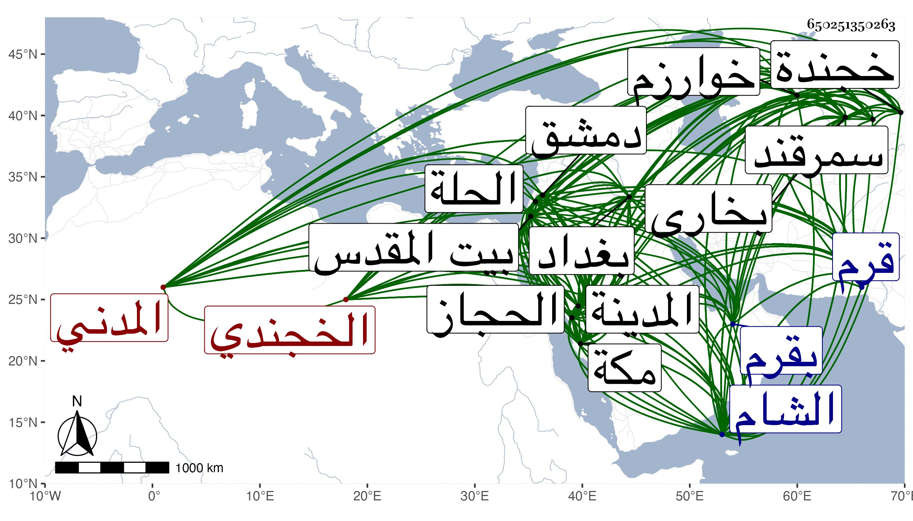

0902Sakhawi.DawLamic.ITO20230111-ara1.EIS1600.650251350263
Biography ID: 650251350263
530
أحمد بن محمد بن محمد بن محمد بن محمد الجلال أبو الطاهر بن الشمس بن الجلال بن الجمال الخجندي ثم المدني ويعرف بالأخوي لكون جده جلال الدين والد والده ووالد والدته وهو سعد الدين أخوين فهما أبناء عم ولكن قد اختصره بعضهم فقال لكون جد له زوج أخاه لأمه لأخته من أبيه . ولد في جمادى الأولى سنة تسع عشرة وسبعمائة واسم أمه صفية وبشرت أمها في منامها ليلة ولادة ابنتها من رجل بهي الهيئة وسماه أحمد ولهذا سماه به أبوه ونشأ في حجر أبويه فلما بلغ ستا أو سبعا توجه به أبوه لمولانا الضياء علم الشام حتى قرأ عليه شيئا من القدوري وحفظ سورا من القرآن والتوشيح في اللغة والكافية في النحو لابن الحاجب والفرائض السراجية والمنظومة في الفقه للنسفي ومختصر الأخسيكتي في أصوله وغيرها وبحثها على أبيه ثم لازم العلاء البرهاني الخجندي حتى قرأ عليه مختصر القصاري في الصرف له مرارا ومختصراته في الفرائض وأبوابا من كتابه الذي جمعه في فتاوي المذهب ولم يكمل ولم ينفك عنه حتى مات ولزم ولده الكبير البرهان محمد حتى قرأ عليه بعض كتاب النحو وكتاب ذوي الأرحام لوالده ثم فارقه وهو كهل ولازم أوحد الدين المنيري دهرا في قراءة الجبر والمقابلة والصرف والعربية والعروض والنجديات والألف المختارة للغزي وقد أخذ خمسمائة بيت من نظمه فأكثر وغير ذلك ولما مات رآه بعد موته بثلاثة أيام وكأنه رام القراءة عليه على عادته فامتنع وأشار بجلوسه مكانه ، ومن شيوخ الجلال أيضا سيف الدين الحسامي وهو أخو جدته وخال والدته قرأ عليه ديوانه والزبدة مختصر القانون في الطب والمقامات الحريرية وجماعة آخرون كلهم بخجندة ثم ارتحل منها وهو ابن اثنتين وعشرين سنة في رمضان سنة إحدى وأربعين وأول ما حل سمرقند ولقي بها العلامة شمس الأئمة بن حميد الدين الزرندي فحضر دروسه وخواجه حسام الدين بن عماد الدين وكبير الدين فحضر درسهما ووعظهما وزار من بها كقثم بن عباس وأبي منصور الماتريدي وصاحب البزدوي والهداية والمنظومة وغيرهم من العلماء والمشايخ المدفونين بمقبرة جاكردره ثم بخارا ونزل فيها بمدرسة خان وهي مدينة قديمة مباركة مشرفة بكثير من العلماء ولقي بها صدر الشريعة فحضر عنده واستفاد منه وسيف الدين العزيري فقرأ عليه العمدة الحافظية في أصول الكلام وسمع عليه بعض الأخسيكتي وغير ذلك وعلاه الدين الغوري فأخذ عنه الجامع الصغير الحسامي قراءة وسماعا والسيد شمس الدين السمرقندي فسمع عليه بعض تلخيص المفتاح وعماد الدين الكلكي فحضر درسه وفوائده والحسام الياغي فحضر وعظه وحميد الدين البلاغاسوني فقرأ عليه اللب في النحو إلا يسيرا من آخره والنجم الوابكني وكان لقيه لهما بوابكن قرية من بخارا وهو بمدرسة ثم فيها نحو ثمانين طالبا وأقام ببخارا سنة وثلثا وزار من بها من العلماء والكبراء كأبي حفص الكبير وشمس الأئمة الحلواني والكردري وحافظ الدين الكبير وأبي إسحاق الكلاباذي وسيف الدين الباخرزي وسائر من تبتغي زيارته هناك ثم دخل خوارزم على درب قريب من جيحون وسكن فيها بالمدرسة التنكية ووافى بها من محققي العلماء شيوخا وكهولا وشبانا عددا كثيرا وأما من الطلبة فنحو ألف طالب نبلاء أذكياء ولأهل العلم والدين فيها رونق تام وبهجة وحرمة وافرة لا مزيد عليها وفيها ما تشتهي من كل خير وثمار ، وممن أخذ عنه بها السيد جلال الدين الكرلابي الحنفي شارح الهداية وغيرها لازمه قريبا من إحدى عشرة سنة حتى أخذ عنه في الشركة الهداية في الفقه في مدة ثمان سنين وبقراءته بمفرده قنية التفاري وبالسماع المصابيح والبعض من المشارق للصغاني والبزدوي والجامعين والزيدات ومن الأصول والفروع والفرائض والتفسير والحديث ما يطول شرحه وأذن له في الإفتاء العلاء بن الحسام السغناقي قرأ عليه أيضا التلخيص والمعاني والبيان من المفتاح للسكاكي والطوالع والمقصد الأقصى وإلى المحصنات من الكشاف والبعض أيضا من تفسير البيضاوي ومن شرح المقاصد للأنصاري وسمع البديع والبزدوي والهداية الأخسيكتي والمغني بكلمالها وألبسه الطاقية وأجاز له إجازة عالية وبكى بكاء طويلا وجعا لمفارقته والبهاء الحلواني لازمه سنين وسمع عليه التلخيص والإيضاح والتمهيد والبعض من الهداية والمغني والجامع الكبير ومن الكشاف وصرف المفتاح بل قرأ البعض منهما أيضا مع نحو المفتاح والمعاني والبيان وغير ذلك والنظام الدار حديثي قرأ عليه شيئا من بعض كتب النحو وسمع عليه غير ذلك والسراج السبعة الهمداني لازمه سنين وقرأ عليه الشاطبية والتجريد في النحو والمقنع في رسم المصحف وتلا عليه لعاصم وكتب له إجازة بديعة والحسام اللشكينة قرأ عليه شيئا من مقدمة الخلافي والتاج الخطابي والسيد العزي اليمني سمع عليهما كثيرا وحافظ الدين التفتازاني الشافعي لازمه مدة وقرأ عليه شيئا من المحرر وبعض الحاوي والمصابيح وجميع المنهاج الأصلي أو جله بحثا وكتب له إجازة بالمذهبين والكمال البخاري لازمه وقرأ عليه عدة من العلوم منها البعض من المفتاح ومن الكشاف ومن البزدوي ومن الهداية والعربية والمعقول والبيان وجميع شرح الإشارات للطوسي وغير ذلك وكذا سمع عليه بعض القانون والشفا والنجاة وغيرها وكتب له إجازة لم يكتبها لغيره وعبد الرحمن البخاري شرحيك قرأ عليه شرح التنقيح وشيئا من البزدوي والمغني للخبازي والتحقيق والفخر الخوارزمي قرأ عليه ديوان المتنبي والمعري واليمني للعيني وبعض الحماسة والعراقيات وشيئا من الكشاف والفائق للزمخشري وسمع عليه المقامات وشيئا من النحو والصرف وغير ذلك وكتب له إجازة بليغة والنجم الألكني سمع عليه شيئا من إيضاح التلخيص ونصير الدين المتوني سمع عليه ماقرئ عليه من العلوم والتاج الأنباري الشافعي قرأ عليه شيئا من إنجاز المحرر وسمع عليه بعض الحاوي في آخرين ممن حضر دروسهم واستفاد منهم ، وكانت مدة إقامته بخوارزم اثنتي عشرة سنة ونيفا وزار من فيها من العلماء والمشايخ كالنجم الكبرى والحسام السغناقي صاحب الهداية والعلاء عزيزاني من الكبار المدفونين بجوار صاحب الكشاف ، ثم ارتحل إلى بلده سراي بركة فأدرك بها البهاء الخطابي وزار فيها من الأموات سيف الدين السائل وشهاب الدين السائل ونعمان ثم إلى أقصراي وأدرك أفلاطون زمانه القطب الرازي وجد بها حافظ الدين وسعد الدين التفتازانيات ثم إلى قرم ثم إلى كفة ثم إلى جزيرة يقال لها سنوت ثم عاد إلى قرم وأدرك بها جمعا منهم أبو الوفا عثمان المغربي الشاذلي صاحب ياقوت العرشي ونال منه حظا وافرا وأقام بقرم نحو سنتين ثم إلى دمشق فلقي بها الشهاب بن السراج والبهاء أبا البقاء قاضي العسكر وناصر الدين بن الربوة والحسام المصري والعلامة ابن اللبان والسيد حسن والعز عبد العزيز الكاشغريان والولوي والمنفلوطي ، ثم ارتحل صحبة الحاج إلى الحجاز فزار المصطفى صلى الله عليه وسلم وصاحبيه رضي الله عنهما وأدرك بمكة من الفقراء حيدر ثم لما عاد إلى من الحج عزم على استيطان المدينة وأشير إليه بالعود لجهة الشام فتوجه مع الحاج أيضا إلى دمشق فلما وصل معان عرج من هناك إلى بلد الخليل فزاره ثم إلى بيت المقدس فأقام بها شهرا ونصفا من سنة ستين ولقي في صفر منها العلائي الحافظ فكتب بعض تأليفاته ومسلسلاته وقرأ عليه وحضر دروسه بالصلاحية وكان مما قرأه عليه من أول البخاري إلى الغضب في الموعظة بالمدرسة الكريمية وناوله سائره واتفق توجه فقه صالحين فألزموه بالرجوع معهم فاستأذن الشيخ فأذن بعد أن كتب له على الإجازة وهي بخط المجد الفيروزابادي كناه بالطاهر لأنه لما أراد الكتابة سأله عن اسمه ولقبه فذكر هماله وعن كنيته فقال لا أعلم لي كنية ولكن أريد تشريفي بذلك منكم فقال افعل ثم لما فرغ قال قد جرى القلم بأبي طاهر ، ووصفه بالشيخ الفقيه الإمام العالم الفاضل الرحال المتقن ووالده بالشيخ الإمام العالم شمس الدين بن الإمام العالم جلال الدين وممن أدرك من الشيوخ بالقدس الجمال البسطامي شيخ الشيوخ مدرس الحنفية والشهاب أبو محمد الحافظ وآخرون ولما انتهى إلى دمشق نزل بالسميساطية وسافر مع الحاج إلى الحجاز فزار وحج فلما عاد إلى المدينة تردد أيضا في المجاورة فأشير عليه في المنام بالحركة فسافر بعد إلى بغداد وزار مشهد علي ثم أي حنيفة وأقام به نحو أربعة أشهر مشتغلا بالمذاكرة مع فقهاء المشاهد وعلمائه وزار من قبر هناك من العلماء والأكابر والصلحاء وهم بالرجوع إلى الشام فاحتال رفاقه حتى أخفوا عنه جميع كتبه فجاء إلى بغداد وسكن المستنصرية واشتغل بالطلب والمذاكرة والإفتاء مدة سنتين ونصف وممن أدرك ببغداد الشمس الكرماني والشهاب فضل الله السيرافي الواعظ والفخر العاقولي وقرأ عليه ثلاثيات البخاري وكتبها له ابن المسمع الفاضل غياث الدين بل كتب عنه الإجازة والعماد بن المحب القرشي وقرأ عليه بعض المشارق وجميع تساعياته وناوله مسند ابن فويرة والمشارق مع الإجازة والجمال عبد الصمد ابن شرف الدين الحصري قرأ عليه أحاديث كتبها له تذكرة منه وناوله جامع السمانيد لابن الجوزي وأجاز له والسيد الحسن السمناني والكمالي الكارثي القاضي الحنفي والشمس المالكي مدرس المالكية والشباري السالك العالم العامل والفقيه الصادق نور الدين زاده بن خواجه أفضل بن النور عبد الرحمن الاسفرايني ثم البغدادي ولازم خدمته وصاحبه وتلقن منه الذكر بثلاث حركات وأخبره أنه تلقن ذلك من الشيخين جبريل وأبي بكر الخياط وهو من أصحاب جده بل دخل زاده أيضا الخلوة والرياضة عند الشيخ خلد الكردستناي وهما من أصحاب شيخه أبي بكر الخياط ثم أن صاحب الترجمة لقي خالد المذكور فإنه مر ببغداد ونزل في رباط درب القرنفليين فصاحبه ولازمه وتلقن منه الذكر أمام خلوة الشيخ ودخل الخلوة وألبسه طاقية كانت على رأسه وأجازه بالسلوك والتلقين وكتب زاده إجازة السلوك والتشبيك والتلقين أيضا ولقي أيضا بالحلة الفخر بن المطهر وتكلف له وألبسه فرجيته التبريزية واستنطقه من مباحث علمية وكان الجلال صاحب الترجمة يدخل الخلوة الأيام البيض من كل شهر مدة سنتين قريب النونيزية وولي الدين محب بن الشيخ سراج الدين المحدث وقرأ عليه بعض مسموعاته وكتب له إجازة ثم ارتحل إلى كربلاء وزار سبط رسول الله صلى الله عليه وسلم الحسين الشهيد ثم إلى سر من رأى وزار بها ثلاثة من كبار أهل البيت ثم إلى إيوان كسرى في المدائن وزار قبر سلمان الفارسي وحذيفة بن اليمان ، ثم ارتحل إلى المدينة النبوية صحبة الحاج هو وخلد المذكور فلما قضى الحج عاد إليها في سنة ست وستين وأقام بجوار النبي صلى الله عليه وسلم ورأيت في مكان آخر أنه قدم المدينة في أواخر ذي الحجة سنة ثلاث وستين فلعله قبل استيطانها وكان ممن أدرك بها العفيف المطري والعفيف اليافعي فلازمه وسأله الأسماع فأنظره مدة ثم أمره بجمع الكتب الستة وغيرها مما يريد في الروضة وأن يقرأ عليه من كل بعضه ويناوله إياها مع الإجازة ففعل ذلك في الستة والموطأ ومسند الشافعي وأحمد والوسيط للواحدي والمصابيح وشرح السنة وجامع الأصول والمشارق والعوارف والرسالة وصحاح الجوهري ثم ابن حبان والشمائل للترمذي والبداية ومنهاج العابدين والإحياء ثلاثتها للغزالي ثم جميع أربعي النووي قرأها في أربعة مجالس بحضور جماعة من الفقهاء في الروضة بجنب المنبر وكذا سمع عليه بعض تواليفه وأجازه بكلها ولقي بها أيضا الأمين أبا عبد الله محمد بن إبراهيم بن عبد الرحمن الشماع المصري قاضي القدس فقرأ عليه اليسير من جامع الأصول وسمع عليه شيئا من الترمذي والعز بن جماعة فسمع عليه الشفا بالروضة بجنب المنبر بقراءة الشمس الخشبي والبردة والشقراطسية وذلك في السنة التي تليها وأجازه وقرأ عليه بعض الكشاف والفائق بواسطتين بينه وبين مؤلفها وبعض ابن حبان والبدر أبا محمد عبد الله بن فرحون فسمع عليه بالروضة بعض البخاري وجميع مسند الطيالسي وأجاز له والقاضي نور الدين على ابن العز يوسف الزرندي سمع عليه الطيالسي أيضا وبعض الصحيحين والترمذي وابن ماجه وحدثه بمكارم الأخلاق بمناظرة الحرمين له وأجازه وزوجه ابنته عائشة واستولدها ولبس منه ومن العفيف المطري وابن جماعة الخرقة الصوفية والبهاء أحمد بن التقي السبكي قرأ عليه أربعي النووي بالروضة وخطبة شرحه للتلخيص المسى عروس الأفراح وناوله له وكذا سمع بمكة على الكمال بن حبيب مسند الطيالسي أيضا في سنة ثلاث وسبعين بقراءة الكمال الدميري وقطنها وهو ابن أربعين سنة بعد أن فضل وأشير إليه بالبراعة والجلالة واستمر بها إلى أن مات أكثر من أربعين سنة يدرس ويروي ويفتي ويدرس ويصنف على طريقة شريفة من الإحسان لأهلها والواردين عليها ونشر العلم والأمر بالمعروف والنهي عن المنكر والتوضع وإلحاق الأصغر بالأكبر حتى انتفع به أهلها وغيرهم وولي تدريس الأمير يلبغا وممن أخذ عنه وانتفع به كثيرا وقرأ عليه جميع مصنفاته وغيرها كالبخاري القاضي نور الدين علي بن محمد بن علي بن يوسف الزرندي ووصفه بالشيخ الإمام العلامة وحيد دهره وفريد عصره والشرف أبو الفتح المراغي قرأ عليه مسند الطيالسي ومسلسلات العلائي وفوائد الحاج للعلائي وألبسه الخرقة وهي فرجية صوف أزرق ولقنه الذكر وزوجه ابنته أمة الله وكانت عابدة خيرة ثم طلقها كأنه بعد موت أبيها وكذا حدث بجزء عن العز بن جماعة ومن تصانيفه شرح البردة أمعن فيه من التصوف مع الإعراب واللغات وما لا بد للشرح منه وهو في مجلد ضخم وشرح الأربعين النووية والأربعين التوحيدية المسمى بالأنوار التفريدية في شرح الجوامع الأربعينية وشرع في شرح الشفا فكتب منه قطعة في كراريس وكذا في شرح التلخيص وفي تفيسير وفي حاشية على الكشاف بين فيها اعتزاله لكنها فقدت إلى غير ذلك من نظم ونثر وعمل رسالة لطيفة في علم الكلام وعشر رسائل في الكلام على آيات وأحاديث والشراب الطهور في التصوف ، وفي آخره شرح قصيد ابن الفارض الذي أوله شربنا على ذكر الحبيب مدامه وفردوس المجاهدين يشتمل على ما يتعلق بالجهاد من الآيات والأحاديث وشرحها في مجلد ضخم وارجوزة في أسماء الله وصفاته اشتملت على نحو ألف سماها راح الروح وسلسل الفتوح . ومات في رمضان وقيل في ليلة الخميس سابع ذي القعدة سنة اثنتين بالمدينة البنوية ودفن من الغد مع شهداء أحد بالقرب من حمزة خارج المدينة في قبر كان حفره بيده لنفسه وهو ابن إحدى وثمانين سنة ويقال إنه رام الانتقال عنها قبل موته بأشره فرأى النبي صلى الله عليه وسلم في المنام وقال له أرغبت عن مجاورتي فانتبه مذعورا وآلى على نفسه أن لا يتحرك منها فلم يبث إلا قليلا ومات رحمه الله وإيانا ، وسمعت من يحكي أنه كان يلقب بمقبول رسول الله صلى الله عليه وسلم لكونه كان يصلي عليه صلى الله عليه وسلم فيقول اللهم صل على سيدنا محمد وعلى آله صلاة أنت لها أهل وهو لها أهل فرأى رجل من أكابر أهل الحرم النبي صلى الله عليه وسلم حين هم صاحب الترجمة بالتحول من المدينة وهو يقول له قل لفلان لا تسافر فإنه يحسن الصلاة علي ، وسئل الشيخ عن كيفية صلاته فذكرها ، وقد ذكره شيخنا في أنبائه باختصار فقال أنه شغل الناس بالمدينة أربعين سنة وانتفع الناس به لدينه وعلمه ، وأعاده في سنة ثلاث وأشار إلى أن العيني أرخه فيها . قلت والأول هو الصواب . وكتب إليه أبو عبد الله بن مرزوق وقد أرسل إليه صاحب الترجمة يستد عليه الإجازة لنفسه ولولديه إبراهيم وطاهر بما نصه :
| أجزت السائل الأرض المجازا | جلال الدين خير من استجازا |
| أمام معارف وكفى إماما | لعلم مذاهب النعمان حازا |
| وإن كنت الأحق بذاك منه | لتقصيري حقا لا مجازا |
| ولكني ائتمرت له امتثالا | ومتتفيا مناهج من أجازا |
ووصفه بالقدوة العلم والعلامة الذي منه الأعلام تتعلم إمام الطائفة السنية المحمدية وقدوة الجماعة الحنيفية الحنفية رأس المدرسين في المدينة النبوية وصدر المتصدرين بالروضة الشريفة القدسية ، ووصف أباه بالامام العلامة القدوة الأكبر الأشهر أبي عبد الله انتهى . وكان كل من أبيه وجده وجد أبيه علماء ، وكتب إليه وهو بالمدينة الشريفة أبوه من بلاده .
